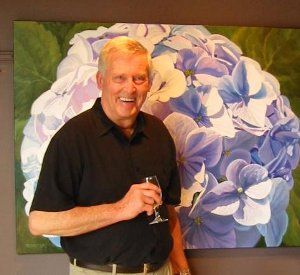

Don Berger Art
“When Don speaks about his work, he says that the juxtaposition of palettes and shapes provided by nature are purely an abstract as he sees it. He is impressed by the myriad of form and color that meet the eye, especially when the sun intensifies light and dark. The end result, when he stands back to assess the process, is a work reflective of the magic flora work in all of us.” (Hambleton Galleries)
Don Berger began his studies in 1949, at the Art Institute of Chicago. He attended painting classes taught by his uncle, Edgar Rupprecht, and aunt, Isobel MacKinnon. Other art instructors were Boris Anisfeld, Paul Wieghardt and Leroy Niemann. Granted a BFA degree and a Teacher's Certificate, he then taught arts & crafts in the Glencoe, Illinois school system for nine years. Simultaneously, he was marketing prints of pen & ink studies of Chicago scenes in downtown galleries and exhibiting paintings at the Deerpath Gallery in Lake Forest. In 1968, the Berger family of five moved to a ranch in the B.C. interior where he painted landscapes of the Cariboo and Chilcotin, exhibiting them at the Fraser Gallery in Vancouver, B.C. Since then he has exhibited at the Waterwheel Gallery in Estes Park, Colorado; R. Ricketts Gallery in Dallas, Texas; and the Horizons West Gallery in Vancouver. International galleries that are currently exhibiting his works can be found on his website on the To Purchase page.
